Slide instructions
SPACEBAR to move forward through slides.
SHIFT & SPACEBAR to move backwards through slides.
LEFT ARROW & RIGHT ARROW to move through sections.
ESC to see overview and ESC again to exit.
F to enter presentation mode and ESC to exit.
Session 1
Testing for Accessibility
What you will need
Download at: bit.ly/

Overview
- Testing types and tools
- Keyboard accessibilty
- Focus order and indication
- Use of colour
- Text and non-text contrast
Intros
- Name & Role
- Something you're most awesome at
- What you hope to get out of this training
Testing types, toolkit, keyboard and focus
Types of testing
Automated testing
Axe by Deque
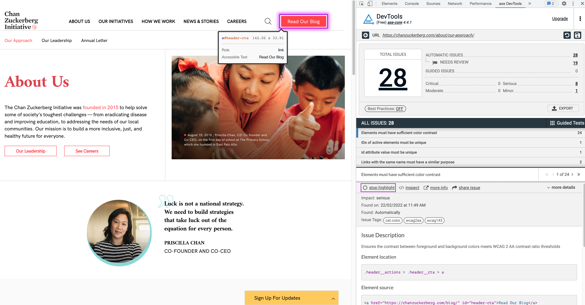Microsoft Accessibility Insights Adhoc tools
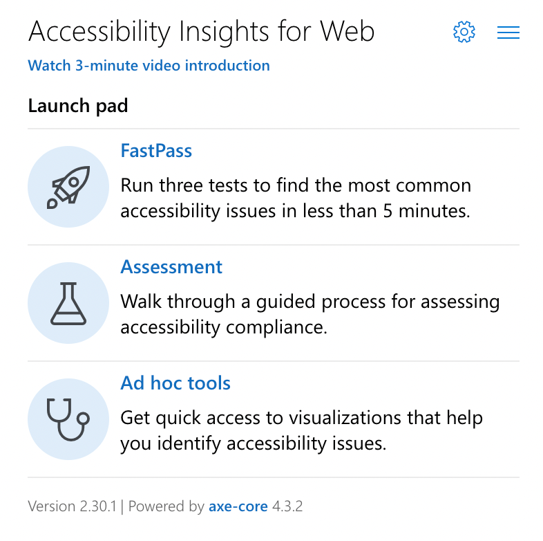Exercise 1: Automated testing with Axe
Automated testing with Axe
- Type: Individual
- Time: 5 mins
Instructions
- Run Axe over your organisation/product homepage
- Post in chat how many overall automated issues are detected
- Familiarise yourselves with the interface and features
Manual testing

Keyboard interaction
- As a: screen reader user or user with limited mobility,
- I want: to be able to complete all tasks using a keyboard,
- So that: I can interact with a website in the way I want
Exercise 2: Keyboard user
Keyboard user
GOV.UK accessibility persona

2.1.1 Keyboard (A)
All functionality of the content is operable through a keyboard interface ...
Manual test | Keyboard
2.1.2 Keyboard Trap (A)
Focus can be moved to and away from a component using only a keyboard interface ...
Manual test | Keyboard
Checklist for Keyboard
| Criteria | Details | |
|---|---|---|
| 2.1.1 Keyboard | ||
| 2.1.2 Keyboard Trap |
Exercise 3: Keyboard only challenge
Keyboard only challenge
- Type: Individual
- Time: 5 mins
Instructions
- Open up your organisation/product homepage
- Using standard keyboard interactions Tab and Shift + Tab try to navigate the page
- Note any elements you can't access and post in the chat as follows:
- 2.1.1 Keyboard: (Describe element)
- 2.1.2 Keyboard trap: (Describe element)
Focus Order
Logical order
- As a: screen reader user or keyboard user,
- I want: focus order to be logical and intuitive
- So that: I can understand and interact with the content, regardless of what method I use
2.4.3 Focus Order (A)
Focusable components receive focus in an order that preserves meaning and operability.
Semi-automated test | Accessibility Insights > Tab stops
Checklist for Focus order
| Criteria | Details | |
|---|---|---|
| 2.4.3 Focus order |
Focus order testing tools demo
Microsoft Insights > Tab stops
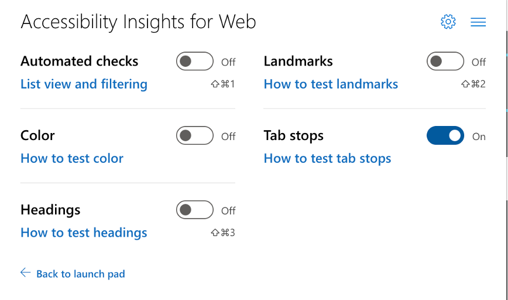
Exercise 4: Focus order testing
Focus order testing
- Type: Individual
- Time: 5 mins
Instructions
- Open up your organisation/product homepage
- Using Microsoft Insights > Adhoc tools > Tab stops test the page for logical Focus order
- Post in the chat any failures you find
Focus Indication
Focus indicators
- As a: keyboard user
- I need: a clearly visible indicator when a UI component has focus
- So that: I know which component I tabbed to
2.4.7 Focus Visible (AA)
Any keyboard operable user interface has a mode of operation where the keyboard focus indicator is visible.
Manual test | Keyboard | Visual check
1.4.1 Use of color (A)
Color is not used as the only visual means of conveying information
Manual test | Keyboard | Visual check
1.4.11 Non-Text Contrast (AA)
Visual information required to identify states have a contrast ratio of at least 3:1 against adjacent color(s)
Manual test | Keyboard | Colour contrast analyser
Good focus indication examples
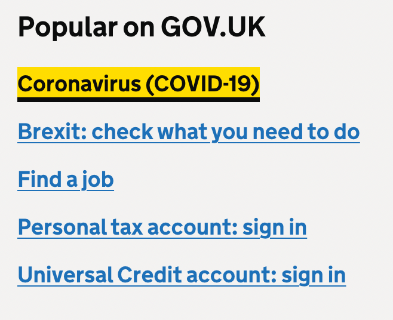 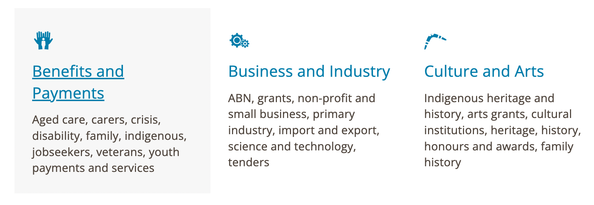Bad focus indication examples
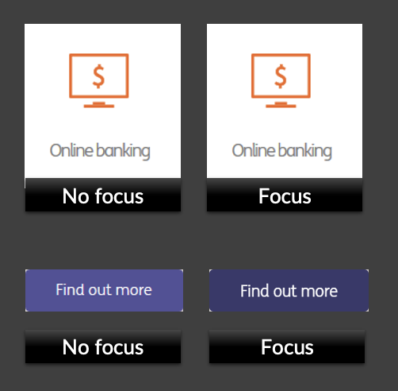Checklist for Focus Indication
| Criteria | Details | |
|---|---|---|
| 2.4.7 Focus visible | ||
| 1.4.1 Focus by color alone | ||
| 1.4.11 Focus contrast |
How to test focus state contrast
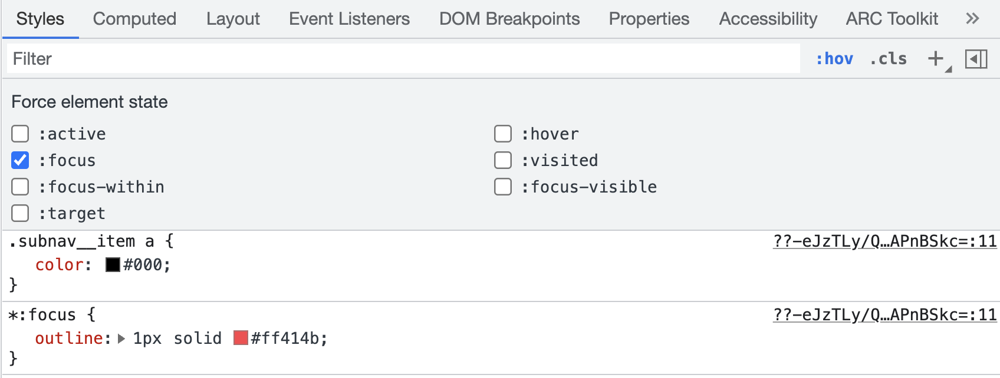- Enable the Focus checkbox in the dev tools styles panel to identify the focus style colour.
- Use the Colour contrast analyser or Tanaguru contrast finder to test contrast against the background.
Exercise 5: Focus indication testing
Focus indication testing
- Type: Individual
- Time: 5 mins
Instructions
- Open up your organisation/product homepage
- Tab through the interactive elements on the page to test if there is a clear visible focus indicator.
- Post in the chat any failures you find
Use of colour
Colour
- As a: user who has difficulty distinguishing between colours and shades
- I need: information that is conveyed with colour to also be available using another visual method
- So that: I can understand all information
1.4.1 Use of Color (A)
Color is not used as the only visual means of:
- conveying information
- indicating an action
- prompting a response
- distinguishing a visual element
Manual test Chrome dev tools | Visual check
Accessible to color vision impaired?
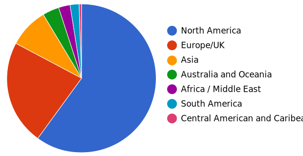Gray scaled version
Accessible text alternative
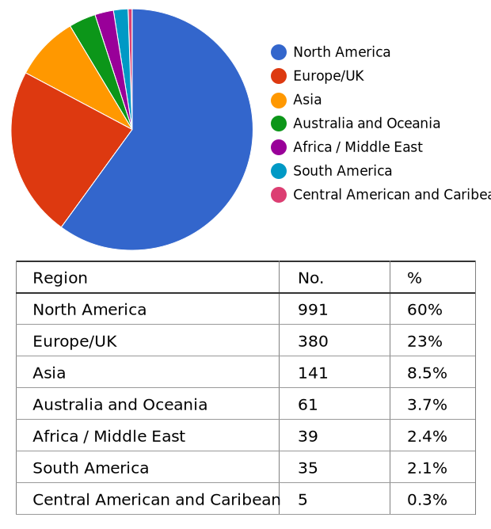How could this chart be made more accessible?
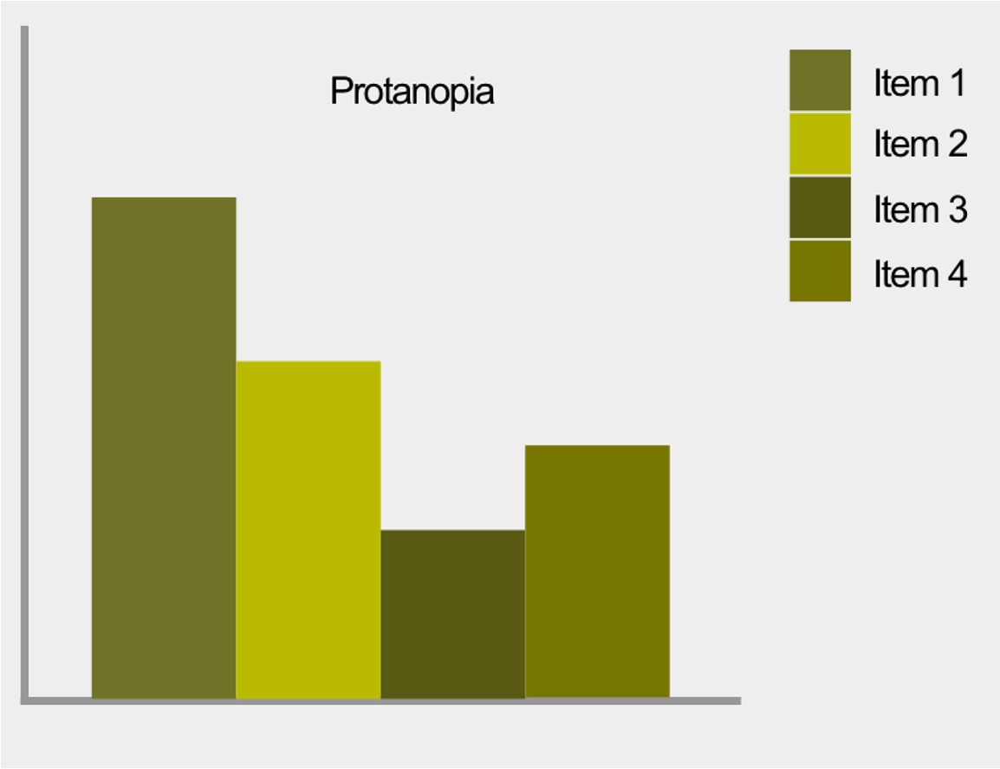Accessible pattern version
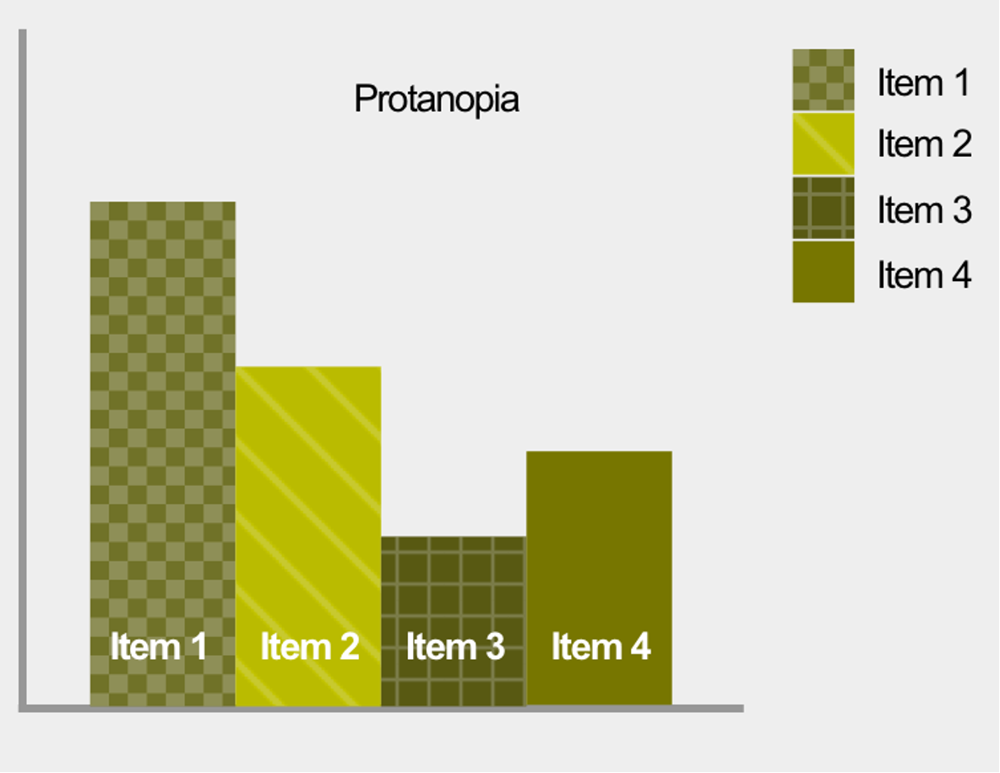Link example – pass or fail Use of color?
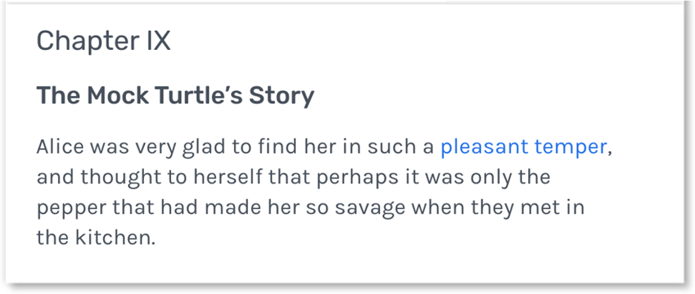Link contrast text requirement 3:1
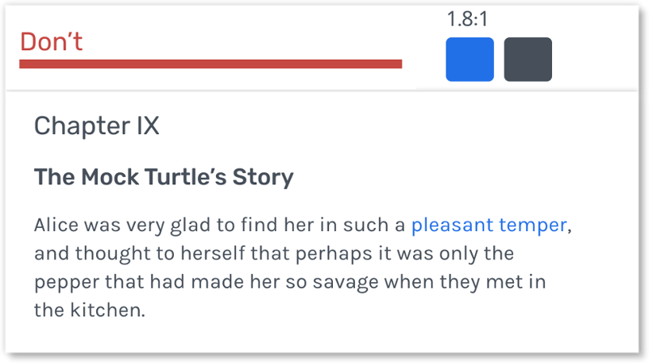Link underline - best practice
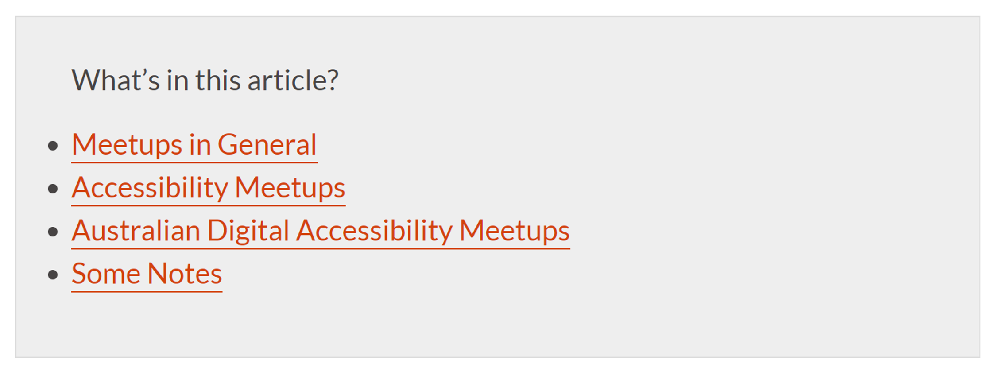Checklist for Use of Color
| Criteria | Details | |
|---|---|---|
| 1.4.1 Use of Color |
Use of Color testing tools demo
Dev tools and ANDI bookmarklet
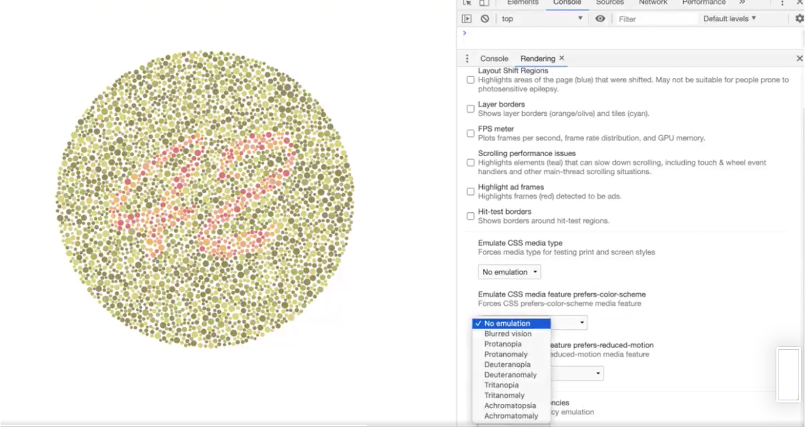Exercise 6: Color blind empathy challenge
Color blind empathy challenge
- Type: Individual
- Time: 5 mins
Instructions
- Open the Chrome web developer tools (Fn > F12) and test any web page
- Locate More tools > Rendering > Emulate vision deficiencies > Achromatopsia
- Note any issues you find and post in the chat as follows:
- 1.4.1 Use of colour: (Describe issue)
Contrast
Text contrast
Contrast
- As a: user with low vision
- I need: important text, graphics and user interface components to have good contrast
- So that: I can easily perceive all important information
Exercise 7: Screen magnifier user
Partially sighted screen magnifier user
GOV.UK accessibility persona
1.4.3 Contrast (minimum)(A)
The visual presentation of text and images of text has a contrast ratio of at least 4.5:1 except for:
- Large-scale text and images of text
- Text and images of text that are part of an inactive UI component or are pure decoration
- Text that is part of a logotype
Semi-automated test | Axe | Visual check
Contrast - normal text
Normal text must have a contrast ratio of at least 4.5:1
Normal text is less than 14 point bold or 18 point
Contrast - large text
Large text must have a contrast ratio of at least 3:1
Large text is at least 14 point bold or 18 point
Contrast - statistics
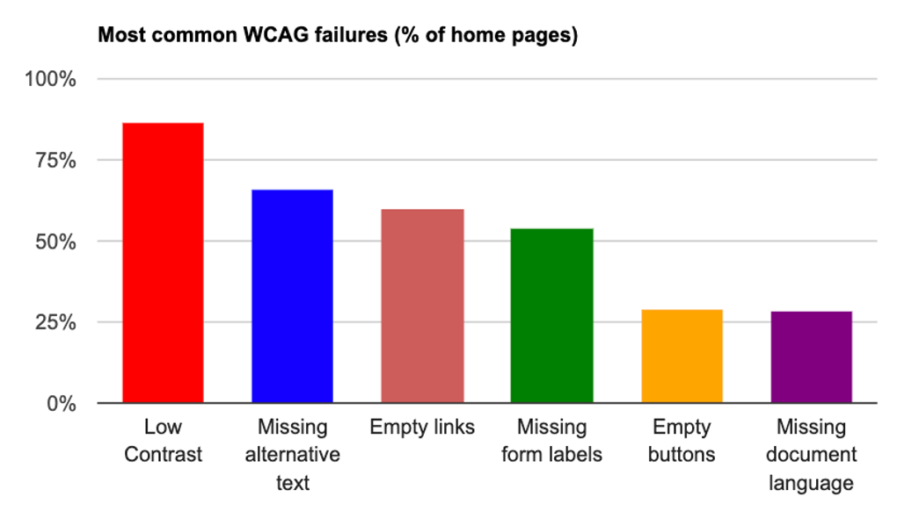According to the WebAIM 2020 global survey of 1 million homepages, 86.4% failed contrast requirements
| Criteria | Details | |
|---|---|---|
| 1.4.3 Contrast minimum | ||
| 1.4.3 Contrast minimum |
Testing text contrast demo
Exercise 8: Text contrast challenge
Text contrast challenge
- Type: Individual
- Time: 5 mins
Instructions
- Open any web page and run Axe to check for text contrast fails.
- Post any contrast fails in the chat as follows:
- URL you tested
- 1.4.3 Contrast minimum: (Describe issue)
Non-text contrast
Contrast
- As a: user with low vision
- I need: important graphics, icons, states and uotlines for user interface components to have good contrast
- So that: I can easily perceive all important information
1.4.11 Non-text contrast (AA)
The visual presentation of the following must have a contrast ratio of at least 3:1 against adjacent color(s):
- User Interface Components Visual information required to identify user interface components and states
- Graphical Objects Parts of graphics required to understand the content
Exceptions
- logos
- browser default focus indicators
- disabled components
Manual test | Developer tools | Colour Contrast Analyser
Contrast - borders, outlines, states
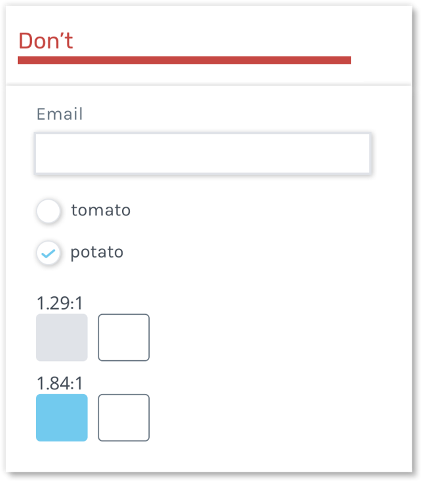 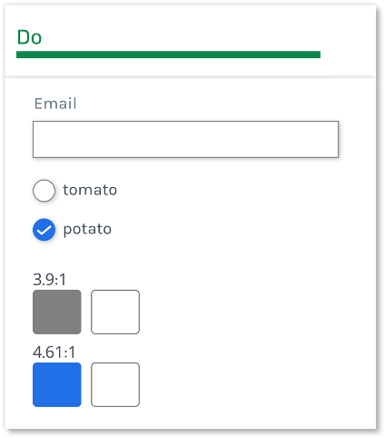Contrast - icons
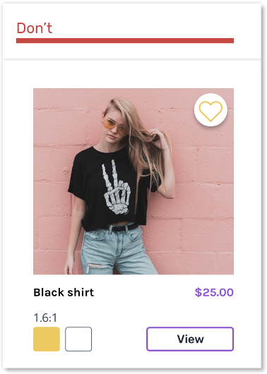 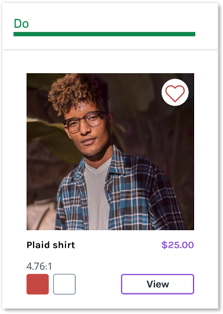Contrast - graphics
Challenge: What meaning is being conveyed by these icons?
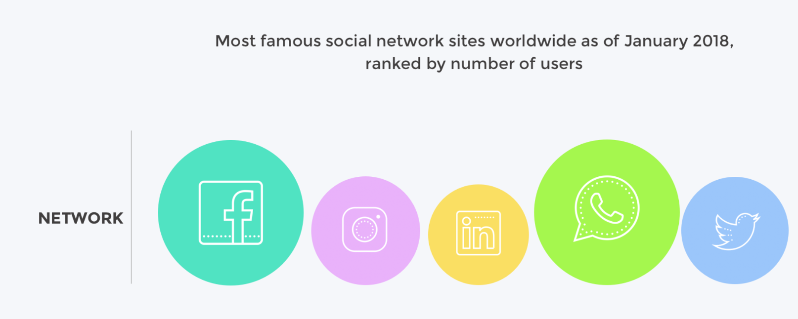Improved contrast - graphics
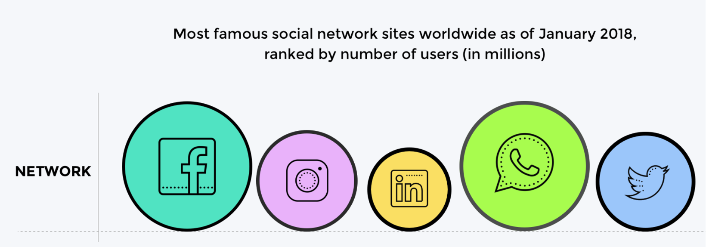Checklist for non-text contrast
| Criteria | Details | |
|---|---|---|
| 1.4.11 Non-text contrast | ||
| 1.4.11 Non-text contrast |
Non-text contrast demo
Exercise 9: Non-text contrast challenge
Non-text contrast challenge
- Type: Individual
- Time: 5 mins
Instructions
- Open your organisation/product homepage and use Colour Contrast Analyser and developer tools to check for non-text contrast fails.
- Test the contrast of outlines, borders, states, graphics and icons
- Post any contrast fails in the chat as follows:
- URL you tested
- 1.4.11 Non-text contrast: (Describe issue)
How to test focus state contrast
- Enable the Focus checkbox in the dev tools styles panel to identify the focus style colour.
- Use the Colour contrast analyser or Tanaguru contrast finder to test contrast against the background.
Session 1 Review
Quiz
Let's see how much you can remember!
Slido link